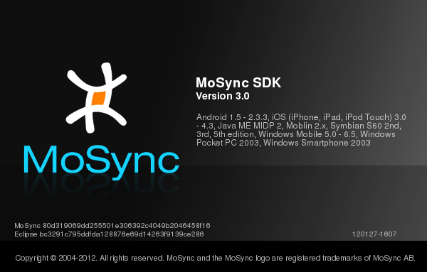
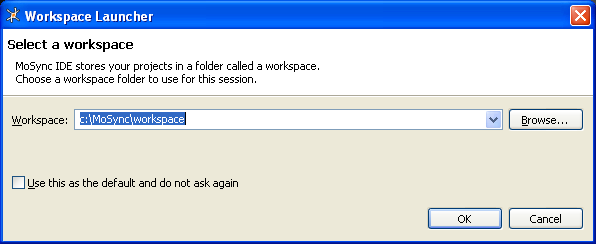
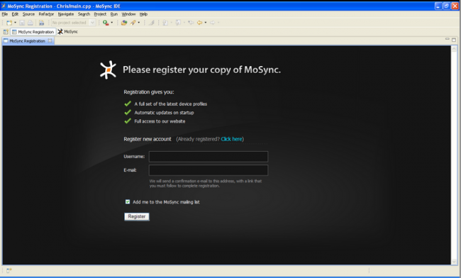
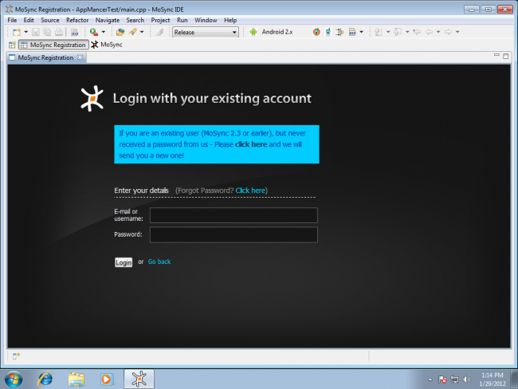
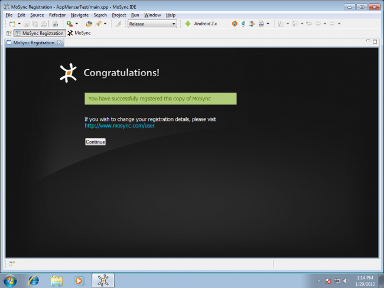
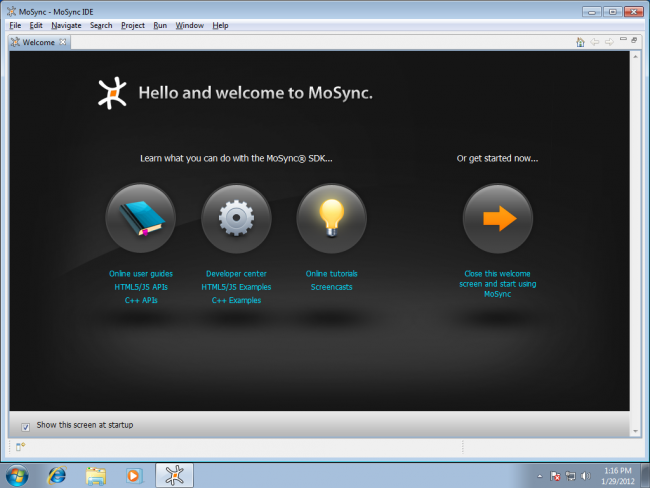
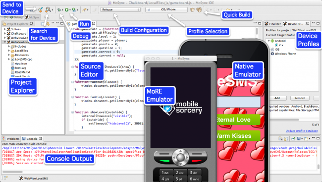
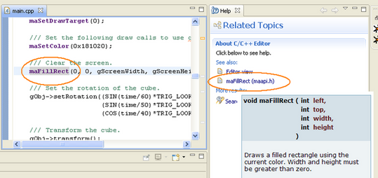

The first time you start the MoSync IDE you will be offered the chance to register the product and you will also see the Welcome screen which provides helpful links to get you started. Here we look at some of the options you have when starting MoSync.
When you start MoSync the first thing you will see is its splash-screen:

The splash screen shows you the target platforms that this version of MoSync can build packages for. It is worth checking this screen whenever you update MoSync because we regularly add new platforms.
The splash screen also shows the version number of the MoSync SDK in the form. Under the words ‘MoSync SDK’ are the major and minor release versions, and in the bottom right corner, the date and build number.
When you start the MoSync IDE will ask you which workspace you want to start working in this session:

The MoSync IDE is based on the popular development environment Eclipse, and workspaces are Eclipse's way of organizing projects. You can have several workspaces, with different projects in each. Workspaces and projects are normal folders that you can see in the file system.
If this is the first time you are launching MoSync, you can just accept the default workspace by clicking OK. The MoSync IDE will finish loading. Later you can create new workspaces and use them to organise your different projects.
Note that workspace names cannot include spaces. Only alphanumeric characters (a-z, A-Z, 0-9) and underscore (_) are allowed.
When you start the MoSync IDE, it will prompt you to register the program if you have not already done so:

MoSync registration is completely free, and it means that you can get automatic device profile updates whenever you start MoSync and full access to your website including our Developer's Forum. You also have the option of subscribing to our mailing list for news about new features.
If you have not registered with us before, simply enter your desired username and e-mail address and follow the instructions. Your e-mail address must be valid because we will send a confirmation e-mail to that address.
If you have already registered with us, follow the Already registered? Click here link and enter your username and password:

When you have completed the registration process, click Continue.

If you do not receive a confirmation email within a few minutes, it may be because your e-mail provider's spam filter has blocked it. Check in your spam or junk email folder to see if it has been put there.
If you are using Gmail and some similar email systems, and you have requested the MoSync IDE to resend your confirmation email, you may get an apparently empty email. Simply click on the "show quoted text" in this email to see the confirmation text.
If you have disabled the registration screen and want to display it later, you can find it under Help > Register in the IDE.
When you successfully registered the MoSync IDE will next display its Welcome screen:

The Welcome screen provides you with many useful links to get you started with MoSync, including links to our guides and examples:
*If the examples already exist in the current workspace they are not replaced. If you make changes to the examples, you can still import the originals at a later time (see Importing the Examples). The examples are stored in the /examples folder in your MoSync installation directory.
If you choose not to show the Welcome screen at start-up, you can always find it again under Help > Welcome in the IDE.
When you are ready to leave this screen, click the Close the welcome screen and start using MoSync link. You will now see the normal Eclipse views in the IDE.
The main screen of the MoSync IDE consists of several "views" and toolbars. If you are familiar with Eclipse, many aspects of the IDE will be familiar to you, but we have added a lot of many features to support the MoSync IDE. Some of the more important features are labelled in the diagram below:
The main views in the MoSync IDE include:
If you close a MoSync-specific view (for example the Device Profiles view or the Finalizer view you can reopen it again by selecting Window > Show View > Other > MoSync.
You can jump directly to the documentation for MoSync syscalls and other keywords by highlighting the keyword in the Editor View and pressing the F1 key. The Help View will open where you can find a link to the keyword's documentation:
